Mechanically Reprogrammable Valve.
Background
Fluid systems, ranging from water purification to industrial processing, often require complex routing networks to manage various input and output streams. Traditionally, this is achieved through an array of individual valves and actuators coordinated by electronic controllers. While effective, each additional actuator introduces a new point of failure, increases maintenance requirements, and adds significant cost and energy consumption to the system.
Problem
Current multi-port selector valves provide a way to simplify these configurations, but they are typically custom-designed for a single specific application. This lack of flexibility means that any architectural change in the fluid system requires a completely new custom valve body, leading to high manufacturing overhead and system rigidity. There is a distinct need for modular, reconfigurable valving that can handle bulk flow applications without the need for bespoke hardware for every new state-machine logic.
Solution
I designed a single-actuator, rotary "mechanical logic" valve that is truly reprogrammable. By using a series of stacked discs—each representing a stage in a truth table—the valve's routing logic can be physically reconfigured without changing the core hardware or adding more actuators. This modular approach allows for complex fluid diversion to be baked into the mechanical geometry of the valve itself. You can access the full IDETC Manuscript here or view the official reference via ASME DETC2023-115066.
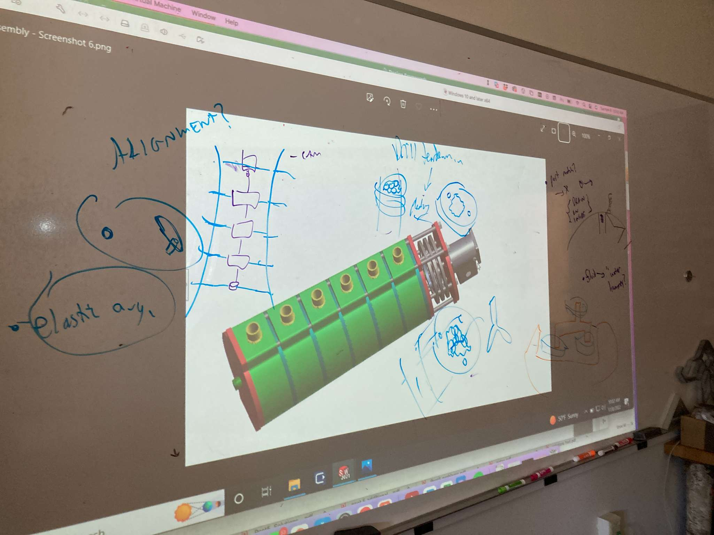
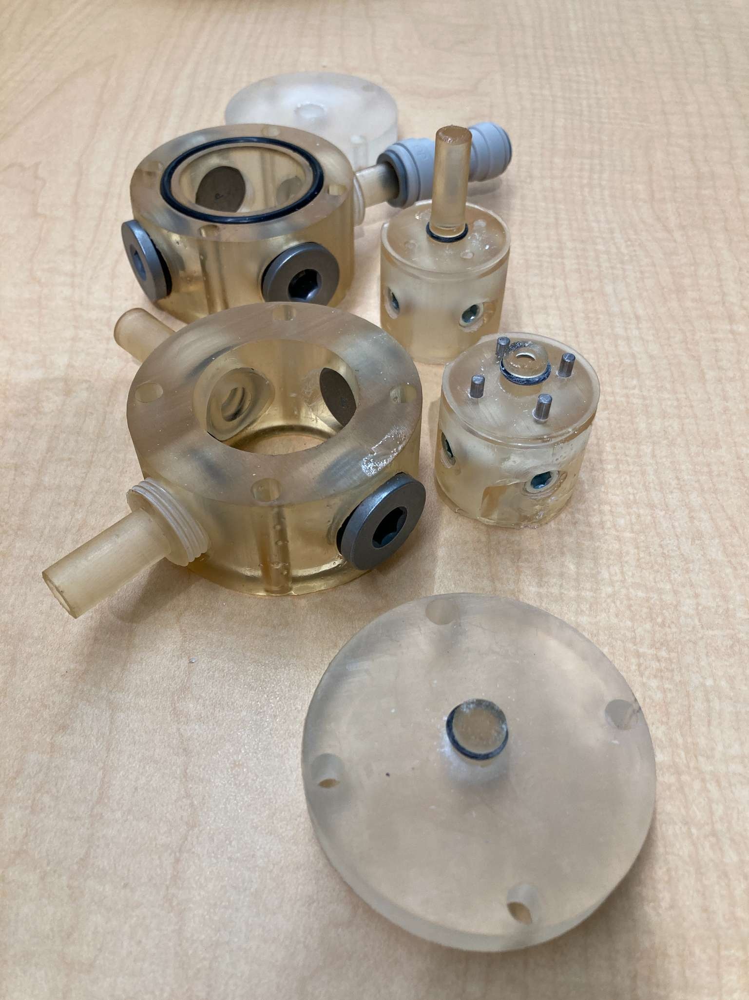
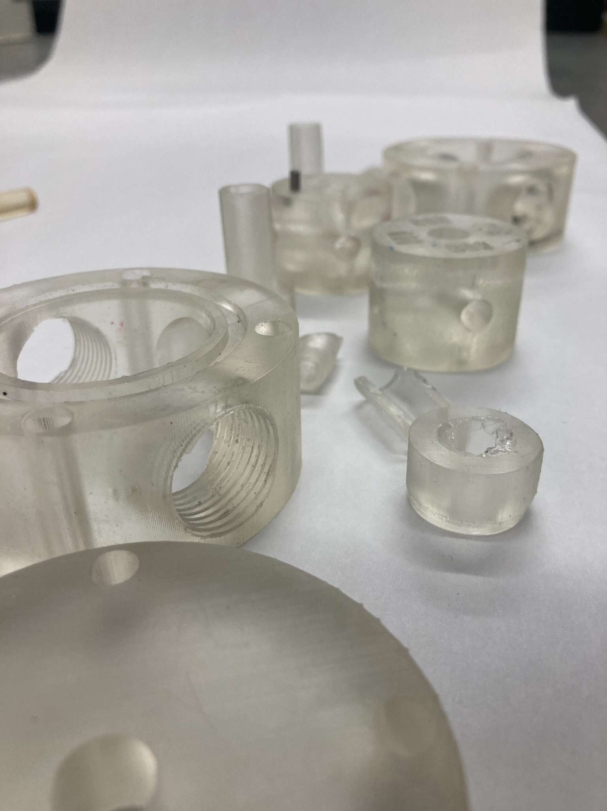
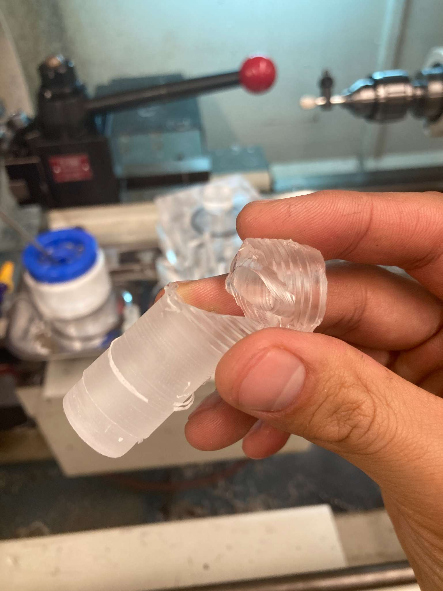
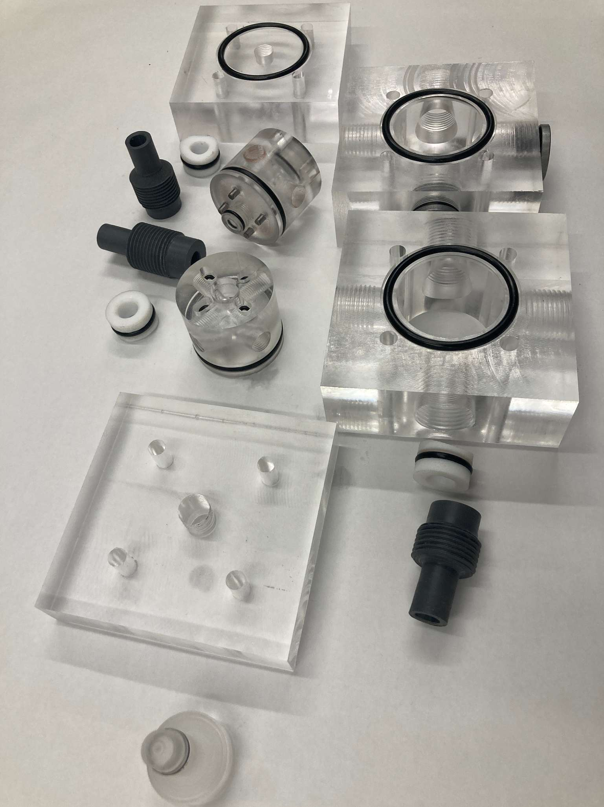

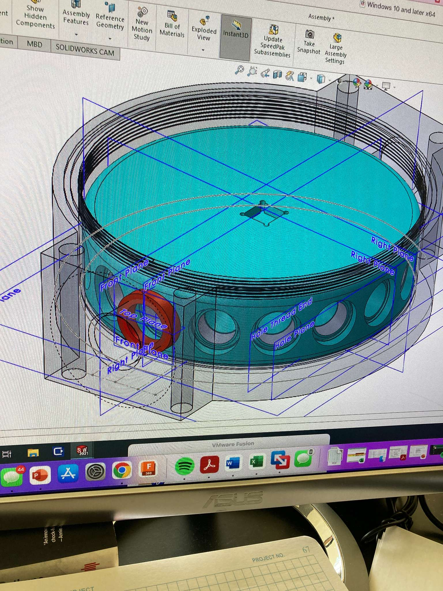
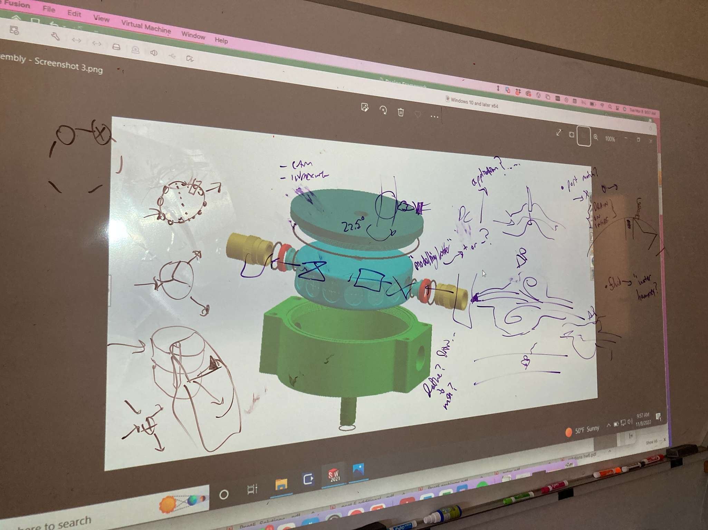
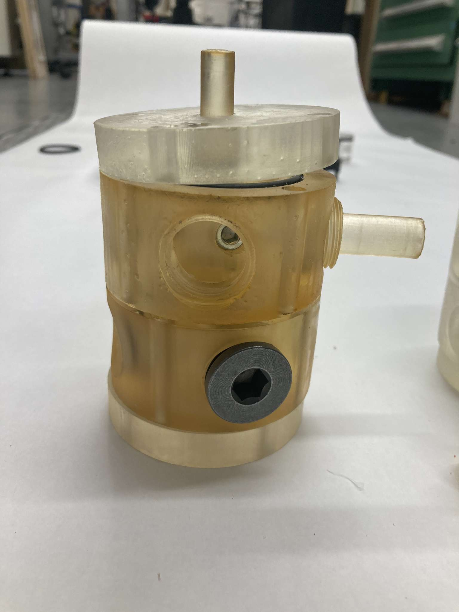
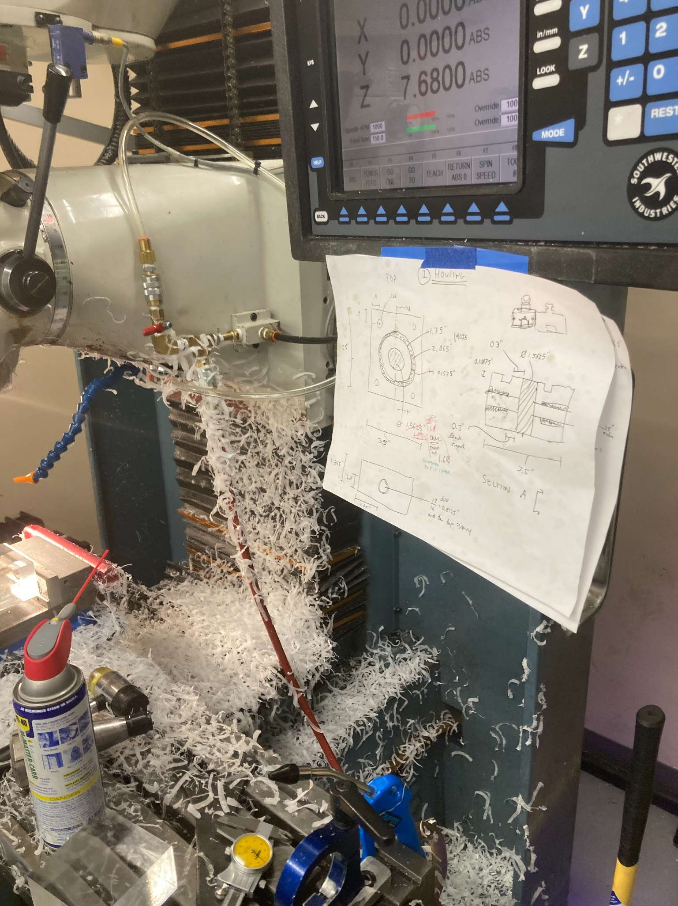
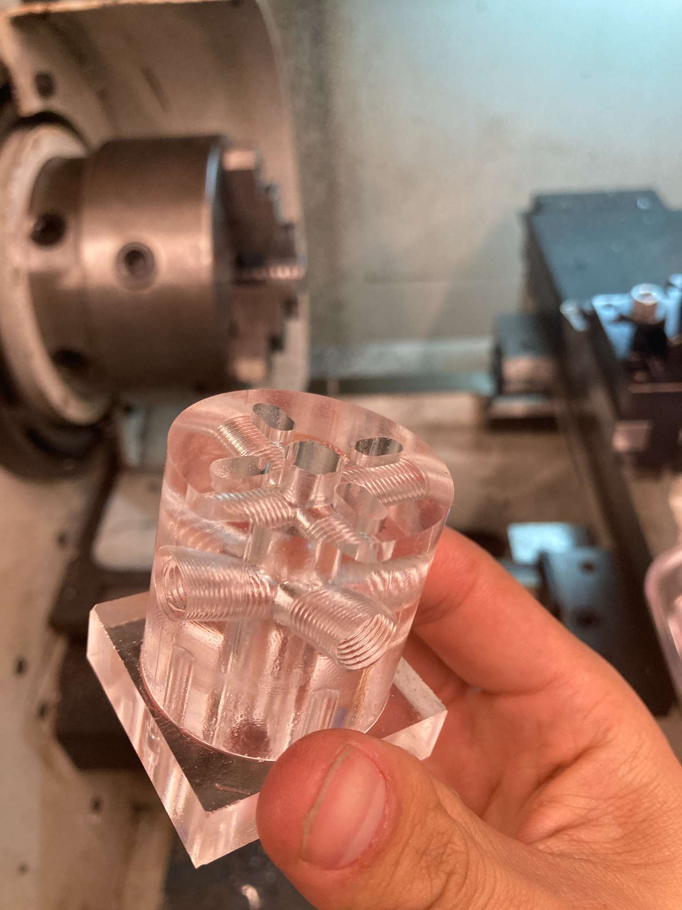
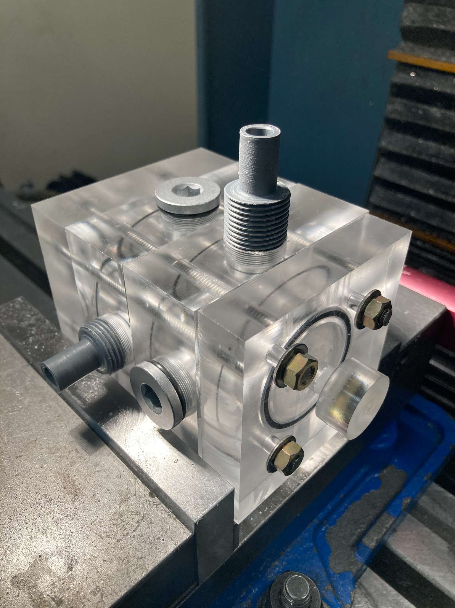